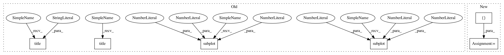

0d6fd37f57b187395ee3addc8d5a758337830f60,dipy/viz/regtools.py,,plot_slices,#Any#Any#Any#,264
Before Change
// Plot the slices
plt.figure()
plt.subplot(1, 3, 1).set_axis_off()
plt.imshow(axial, cmap=plt.cm.gray, origin="lower")
plt.title("Axial")
plt.subplot(1, 3, 2).set_axis_off()
plt.imshow(coronal, cmap=plt.cm.gray, origin="lower")
plt.title("Coronal")
plt.subplot(1, 3, 3).set_axis_off()
plt.imshow(sagital, cmap=plt.cm.gray, origin="lower")
plt.title("Sagittal")
// Save the figure if requested
if fname is not None:
plt.savefig(fname, bbox_inches="tight")
After Change
coronal = np.asarray(V[:, slice_indices[1], :]).astype(np.uint8).T
sagittal = np.asarray(V[slice_indices[0], :, :]).astype(np.uint8).T
fig = _three_plot([axial, coronal, sagittal],
["Axial", "Coronal", "Sagittal"],
cmap=plt.cm.gray, origin="lower")
// Save the figure if requested
if fname is not None:
fig.savefig(fname, bbox_inches="tight")
In pattern: SUPERPATTERN
Frequency: 3
Non-data size: 6
Instances
Project Name: nipy/dipy
Commit Name: 0d6fd37f57b187395ee3addc8d5a758337830f60
Time: 2015-02-04
Author: arokem@gmail.com
File Name: dipy/viz/regtools.py
Class Name:
Method Name: plot_slices
Project Name: nilearn/nilearn
Commit Name: 02806a3dbb8250b6455ec63ac78348a08ba376e8
Time: 2012-10-02
Author: alexandre.abraham@cea.fr
File Name: plot_nifti_simple.py
Class Name:
Method Name:
Project Name: nipy/dipy
Commit Name: 0d6fd37f57b187395ee3addc8d5a758337830f60
Time: 2015-02-04
Author: arokem@gmail.com
File Name: dipy/viz/regtools.py
Class Name:
Method Name: overlay_slices
Project Name: nipy/dipy
Commit Name: 0d6fd37f57b187395ee3addc8d5a758337830f60
Time: 2015-02-04
Author: arokem@gmail.com
File Name: dipy/viz/regtools.py
Class Name:
Method Name: plot_slices